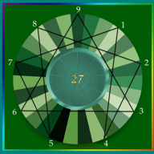
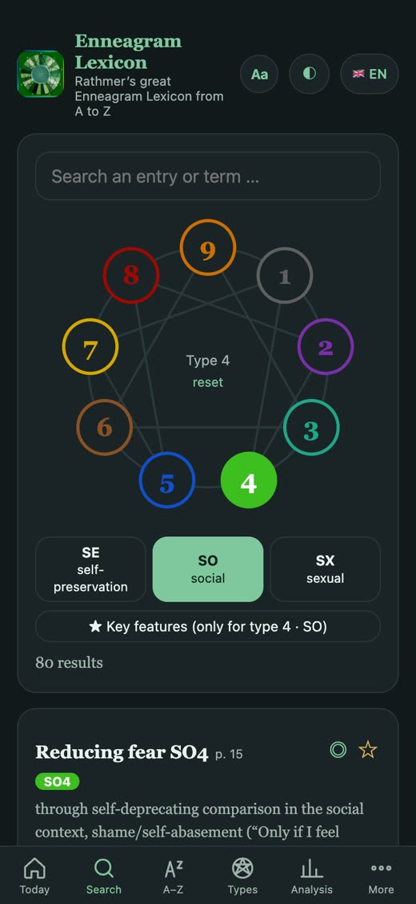
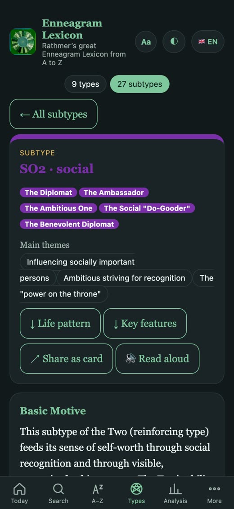
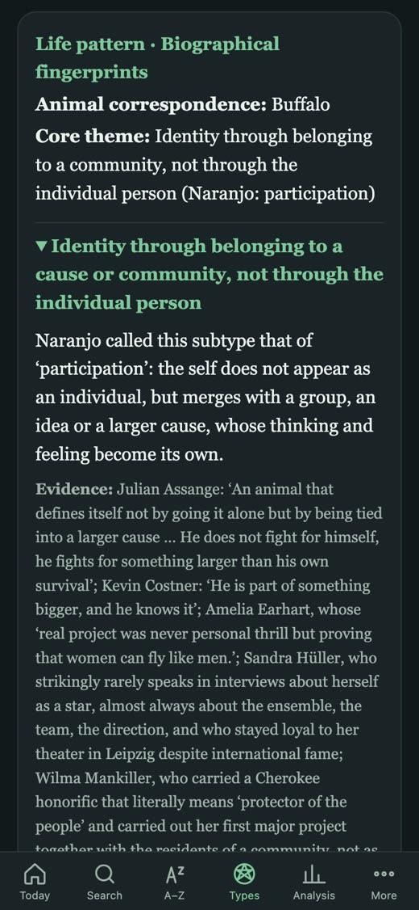
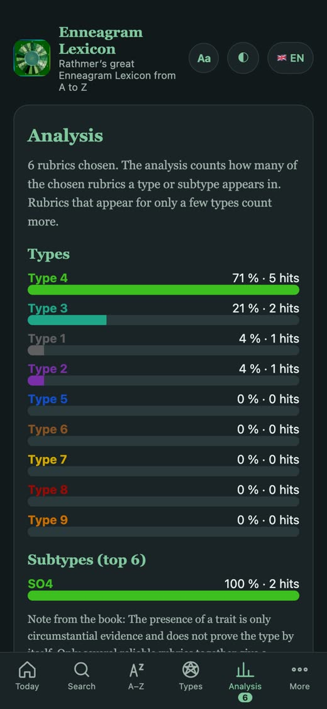

The app to “Rathmer’s großes Enneagramm-Lexikon von A–Z”

Enneagram Lexicon
Fear, envy, shame: where do they belong in the Enneagram?
Over 6,000 entries on the nine types and 27 subtypes, from A to Z: rubrics on the mind, symbols and themes, definitions, explanations and the countries of the world. Choose a type on the wheel, filter by self-preservation, social or sexual, and find within seconds where a keyword appears. Plus the 27 subtypes as detailed profiles with life patterns, and a repertory-style analysis.
Available now
Open the Enneagram LexiconIn German and English. To get to know it, the letters A and B and three subtype profiles are free, and all entries can be searched. The whole lexicon is a one-time payment, no subscription: introductory price €24.99, later €29.99, five years of access. You receive access by email.
The film about the app
90 seconds: wheel, search, subtypes, life patterns, analysis and picture card.
Music: “Nine Gazes, Nine Words” by Detlef Rathmer.
A look inside the app
This is what the app looks like on a phone.




What the app offers
Full-text search across all entries and definitions, even with typos. Filter by the nine types on the wheel and by the subtypes SE, SO and SX.
All entries in alphabetical order, with type tags and the page in the book. Tap to open the definition.
The nine types and the 27 subtypes: for each subtype a newly written, uniformly structured profile with basic motive, centre of intelligence, anxiety reduction, characteristics, mottos and dynamics in everyday life.
The entries that appear in the lexicon under only one particular type or subtype.
Biographical fingerprints for each subtype, with the matching animal, core theme and the well-known personalities who belong to it.
Collect observations as rubrics and see which type and subtype fit best. A single rubric is only an indication.
More than a thousand personalities and figures, arranged by type and subtype and continually extended from the portraits of the Enneagram Healing Compass.
All 202 countries of the world, assigned to a type and subtype, with explanations from the Enneagram Healing Compass. Also found through the search and the wheel.
Every subtype profile can be passed on as a picture card with a short version.
Entries and profiles can be read aloud with your device’s voice. As in the other apps, the start page shows the weather.
Book and app
Two versions, each for its own purpose.
“Rathmer’s großes Enneagramm-Lexikon von A–Z” is a reference work in German, published in hardcover and paperback.
The same knowledge, quick to find, with wheel, filters, newly written subtype profiles, life patterns, analysis and up-to-date personalities.
The book behind the app
The author
 Detlef Rathmer
Detlef RathmerNon-fiction author, Enneagram expert, lecturer and coach. Working as a Heilpraktiker (German non-medical health practitioner) since 2000, with a focus on classical homeopathy.
Note: The app arranges knowledge for orientation and self-reflection. It is not a diagnosis and no substitute for medical or psychotherapeutic treatment. Assigning people to types is an assessment based on publicly known information.